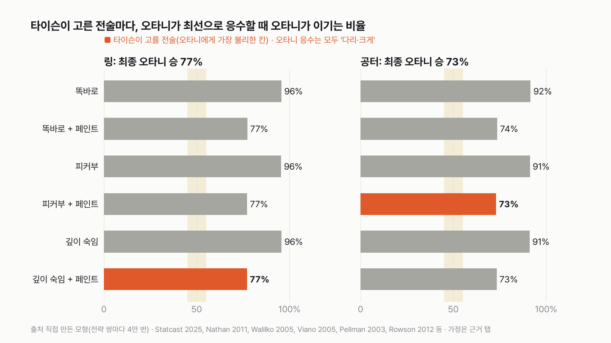
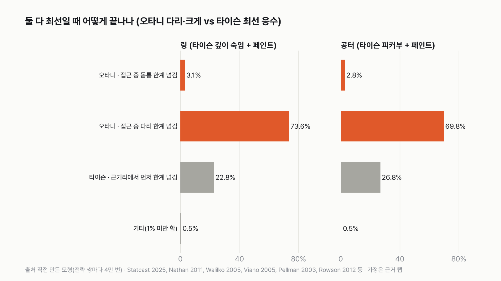
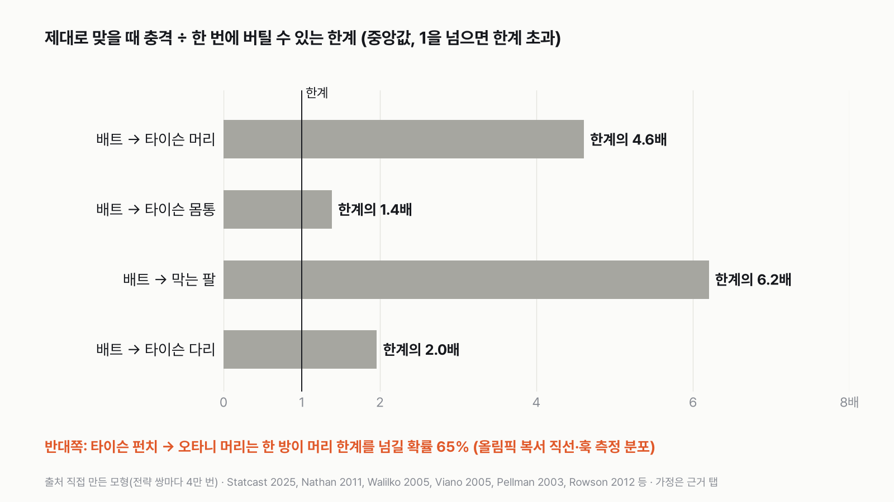
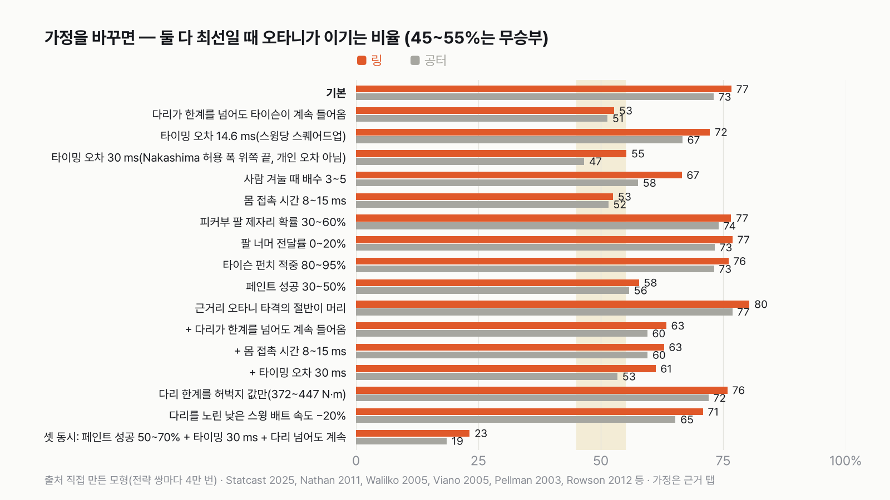

타이슨 vs 방망이 든 오타니, 둘 다 최선이면 오타니 승
이 대결은 '타이슨이 배트 거리를 지나 안쪽으로 들어오느냐'로 갈려요. 근거리에서 오타니가 몸통만 친다고 보면, 들어온 타이슨이 98% 이겨요.

- 최종 판정은 오타니 승이에요. 둘 다 가장 잘하는 방법을 고르면 오타니가 링에서 77%, 공터에서 73% 이겨요. 타이슨이 어떤 자세·전술을 골라도 오타니가 55%를 넘었어요.
- 승부를 가른 건 다리를 노리는 큰 스윙이에요. 막는 팔이 닿지 않는 높이라, 맞으면 다리가 한계를 넘어 타이슨이 더 들어오지 못해요.
- 타이슨의 최선은 자세와 상관없이 페인트로 스윙을 일찍 끌어내는 거예요. 페인트가 아주 잘 통하고(50~70%), 오타니의 타이밍이 크게 흔들리고, 다리를 맞아도 계속 들어온다는 세 조건이 한꺼번에 맞으면 타이슨이 이겨요.
| 경기장 | 오타니 최선 | 타이슨 최선 응수 | 오타니 승률 | 판정 |
|---|---|---|---|---|
| 링 | 다리를 노려 크게 휘두르기 | 자세 상관없이 페인트 | 77% | 오타니 승 |
| 공터 | 다리를 노려 크게 휘두르기 | 자세 상관없이 페인트 | 73% | 오타니 승 |
최종: 둘 다 최선이면 링·공터 모두 오타니가 이겨요. 순서를 바꿔 타이슨이 먼저 고르고 오타니가 응수해도 같은 값이 나와서, 서로 바꿀 이유가 없는 지점이에요.
가장 흔한 장면 — 다리를 맞고 멈추는 타이슨
둘 다 최선일 때 링에서 가장 흔한 결말은 배트가 다리에 맞아 한계를 넘는 경우(73.6%)였어요. 처음엔 이게 의외였어요. 그런데 타이슨의 피커부는 팔꿈치부터 손끝까지, 머리와 가슴 옆을 막는 자세예요. 다리는 팔이 닿지 않아요. 큰 스윙이 다리에 맞으면 걸리는 힘은 다리뼈가 버티는 한계의 2배예요.

두 번째로 흔한 결말은 타이슨이 근거리까지 들어와 먼저 이기는 경우(링 22.8%, 공터 26.8%)였어요. 대부분 페인트에 걸려 오타니가 일찍 휘두른 경우예요.
오타니의 조준 — 다리, 허리, 머리, 가슴 순
링에서 피커부로 들어오는 타이슨(페인트 없음)을 상대로 조준만 바꿔 보면, 크게 휘두를 때 오타니 승률은 다리 96%, 허리 77%, 머리 65%, 가슴 35%예요. 가슴은 막는 팔이 가장 많이 가리는 높이라 가장 손해였고, 허리는 팔꿈치 아래라 비어 있어서 두 번째로 좋았어요. 머리는 맞으면 한계를 크게 넘지만, 과녁이 작아 빗나가는 경우가 많았어요.
근거리에 들어오면 — 타이슨 쪽이에요
타이슨이 주먹 거리까지 들어오면 판이 뒤집혀요. 타이슨 펀치 한 방이 오타니 머리 한계를 넘길 확률은 64%예요. 대부분 회전 가속 때문이에요. 반면 오타니가 바짝 붙은 상대를 짧게 끊어 칠 때 몸통 한계를 넘기는 경우는 6%뿐이었어요. 근거리까지 간 경기의 98%는 타이슨이 이겼어요. 다만 이건 근거리에서 타이슨은 머리를, 오타니는 몸통을 친다고 본 결과예요. 오타니도 절반은 머리를 노린다고 바꾸면 최종 판정은 오타니 쪽으로 더 기울어 링 80%, 공터 77%예요.
막는 팔은 — 팔은 한계를 넘지만, 타이슨은 옆으로 밀릴 뿐이에요
가슴 높이로 휘두른 배트가 막는 팔에 맞으면, 팔에 걸리는 힘은 팔 한계의 6.2배예요. 그 충격이 타이슨 몸 전체(99kg)를 옆으로 미는 정도는 초속 0.26m예요. 초속 3~5m로 들어오던 타이슨은 거의 그대로 들어와요. 팔 너머로 전해진 충격이 한계를 넘는 건 가슴 높이에서 막았을 때 2% 안팎, 머리 높이에서 막았을 때 19%였어요. 그래서 오타니에게 가슴 조준은 손해였어요(피커부 상대 35%).

타이슨의 전술 — 숙여 피하기는 안 되고, 페인트는 통해요
스윙을 보고 반응해서 숙이는 건 시간상 불가능했어요. 보고 반응하는 데 0.15~0.20초, 숙이는 데 0.10~0.20초(가정)로 합쳐 0.25초 이상이 걸리는데, 배트는 휘두르기 시작해서 0.14~0.18초면 지나가요. 미리 숙이고 들어가는 경우는 '깊이 숙임' 자세로 따로 계산했어요.
페인트는 달랐어요. 다가오다 속도를 바꿔 오타니가 일찍 휘두르게 만들면(성공률 10~30%로 가정), 헛스윙 뒤 다시 휘두르기 전에 근거리로 들어가요. 오타니가 다리를 노릴 때 타이슨이 페인트를 쓰면 오타니 승률이 96%에서 77%로 내려가요. 타이슨의 여섯 가지 전술 중 오타니를 가장 많이 끌어내린 게 페인트예요. 세 자세 사이 차이는 0.2%p로 표본 오차 수준이라, 타이슨의 최선은 '자세 상관없이 페인트'예요.
오타니는 제때 휘두를 수 있나 — 링에서 99% 제때예요
페인트가 없으면 오타니는 링에서 99%를 제때 휘둘렀어요. 계산에 쓴 숫자는 근거 탭에 적었어요.
어디서 뒤집히나
가정을 하나씩 바꿔 봤어요. 무승부로 바뀌는 조건은 둘이었어요. 다리가 한계를 넘어도 타이슨이 계속 들어온다고 보면 링 53%, 공터 51%예요. 몸에 배트가 닿아 있는 시간이 8~15ms로 길면 53%, 52%예요. 사람을 겨눌 때 오타니의 타이밍 오차가 30ms(공을 칠 때의 3배)면 공터만 무승부(47%)이고, 링은 아슬아슬하게 오타니(55.3%)예요. 다리를 노린 낮은 스윙이 20% 느리다고 봐도(71%, 65%), 다리 한계를 허벅지 값으로만 잡아도(76%, 72%) 오타니예요. 팔 위치, 팔 너머 전달률, 타이슨 펀치 적중률도 판정을 바꾸지 못했어요.
타이슨이 이기는 구간도 있었어요. 페인트가 50~70%로 아주 잘 통하고, 오타니의 타이밍 오차가 30ms이고, 다리를 맞아도 계속 들어온다는 세 조건을 한꺼번에 넣으면 오타니는 링 23%, 공터 19%로 타이슨이 이겨요. 하나씩은 판정을 못 바꾸는 조건들이 겹칠 때만 열리는 구간이에요.

이 대결을 여러 번 고쳐 쓰면서 가장 많이 바뀐 건 승자였어요. 처음엔 속도만 비교했고, 그다음엔 '타이슨 근소 우세'였어요. 양쪽에 같은 한계를 쓰고 오타니에게 다리를 노리는 선택지를 주자 오타니 쪽으로 넘어왔어요. 숫자를 맞춰 갈수록, 승부는 '들어오느냐 못 들어오느냐' 하나로 모였어요.
이 숫자는 어디서 왔나요
출처
기준일 오타니 측정값은 2025년 정규시즌(Statcast, 2026년 11월 6일 받음). 타이슨은 1988년 기준(키 178cm, 체중 99kg). 모형은 2026년 11월 6일에 돌렸어요.
MLBStatcast
- 배트 트래킹 (Baseball Savant)원본 보기
오타니 2025년 배트 속도, 스윙 길이, 맞힌 공당 스퀘어드업 비율
Nakashima 외 2025,Frontiers in Sports and Active Living
- 스위트스폿 타이밍 허용 폭doi:10.3389/fspor.2025.1557145원본 보기
타이밍 오차를 역산하는 기준
Higuchi 외 2016,PLoS ONE
- 보고 동작을 고치는 시간doi:10.1371/journal.pone.0148498원본 보기
반응 150~200 ms, 배트 가속~맞는 순간 약 180 ms
Nathan 외 2011,Sports Engineering
- 나무 배트 실측doi:10.1007/s12283-011-0065-4원본 보기
배트 질량·무게중심·관성모멘트
Nathan 2003,American Journal of Physics
- 배트 유효 질량 식doi:10.1119/1.1522699원본 보기
맞는 지점별 유효 질량
Zhang 외 2025,Life
- 배트-머리 충돌 계산doi:10.3390/life16010009원본 보기
머리 접촉 시간 1~3 ms
Walilko·Viano·Bir 2005,British Journal of Sports Medicine
- 올림픽 복서 직선 펀치doi:10.1136/bjsm.2004.014126원본 보기
펀치의 머리 가속 분포
Viano 외 2005,Neurosurgery
- 복싱 훅 펀치doi:10.1227/01.neu.0000187541.87937.d9원본 보기
펀치의 머리 가속 분포
Pellman 외 2003,Neurosurgery
- 머리 직선 가속 기준doi:10.1227/01.NEU.0000083559.68424.3F원본 보기
머리 한계 98 g
Rowson 외 2012,Annals of Biomedical Engineering
- 머리 회전 가속 기준doi:10.1007/s10439-011-0392-4원본 보기
머리 한계 6,383 rad/s²
Kent·Patrie 2005,Forensic Science International
- 가슴 눌림 기준doi:10.1016/j.forsciint.2004.04.086원본 보기
몸통 한계(가슴두께의 35%)
Pintar 외 1998,SAE
- 아래팔 굽힘 강도doi:10.4271/983149원본 보기
막는 팔 한계 45~94 N·m
Kerrigan 외 2004,International Journal of Crashworthiness
- 다리뼈 굽힘 강도doi:10.1533/ijcr.2004.0315원본 보기
다리 한계 312~447 N·m
ESPNMike Tyson turns 50
- 타이슨 경기 기록 (ESPN Stats & Info)
타이슨 파워펀치 적중률 56%(CompuBox)
WinterBiomechanics and Motor Control of Human Movement
- 사람 몸 비율 (Drillis·Contini 1966)
팔꿈치·손끝·엉덩이 높이
김지은·김은경 2023 (사이즈코리아 제8차)
- 한국인 인체치수doi:10.30751/kfcda.2023.25.1.33원본 보기
가슴두께
미국 주 체육위원회 규정
- 링 규격 (Wisconsin SPS 192.37 등)
링 한 변 16~20피트(4.9~6.1m)
어떻게 셌나요
- 두 국면으로 나눠 계산했어요. 접근 국면은 타이슨이 배트 거리 밖에서 안으로 들어오는 동안, 근거리 국면은 타이슨이 주먹 거리까지 들어온 뒤예요.
- 같은 한계: 머리는 직선 가속 98 g(Pellman 2003) 또는 회전 가속 6,383 rad/s²(Rowson 2012), 몸통은 가슴이 가슴두께의 35%만큼 눌리는 정도(Kent·Patrie 2005)예요. 배트든 주먹이든 같은 기준으로 봐요.
- 타이밍: 오타니가 보고 반응하는 데 0.15~0.20초, 휘두르는 데 0.14~0.18초가 걸려요(Higuchi 2016). 공을 칠 때 타이밍 오차는 9.8 ms로 계산했고, 사람을 겨눌 땐 그 1~3배로 넣었어요.
- 막는 팔이 가리는 높이는 사람 몸 비율(Drillis·Contini)로 계산했어요. 타이슨(178cm)이 피커부 자세로 팔꿈치를 옆구리에 붙이고 손을 뺨에 대면, 옆에서 오는 배트를 팔꿈치 높이부터 손끝 높이까지 막아요. 허리·다리는 비어 있어요.
- 펀치 한 방의 머리 가속은 올림픽 복서 직선 펀치(Walilko 2005)와 복서 훅(Viano 2005)을 반반 섞어 뽑았어요.
- 전술: 타이슨은 자세 3가지(똑바로, 피커부, 깊이 숙임)에 페인트를 쓰거나 안 쓰거나, 오타니는 조준 4곳(머리, 가슴, 허리, 다리)에 크게 또는 짧게 휘두르기를 골라요. 서로 상대의 최선에 맞춰 고른 결과(최소최대)가 최종 판정이에요.
- 무승부 기준은 미리 정했어요. 오타니가 이기는 비율이 45~55%면 무승부예요.
한계 10가지
이 데이터로 말할 수 없는 것
- 모형이에요. 실제로 붙여 본 결과가 아니고, 규칙과 가정을 바꾸면 숫자가 바뀌어요. 그래서 판정을 바꾸는 조건을 같이 적었어요.
- 측정을 찾지 못해 범위로 가정한 값: 타이슨 전진 속도·가속도, 피커부 웅크림 높이, 팔이 제자리에 있을 확률, 페인트 성공률, 숙이는 시간, 사람을 겨눌 때 타이밍 오차의 배수, 근거리 펀치 간격과 오타니의 짧은 타격, 팔 너머 전달률, 몸통·팔·다리 접촉 시간, 가슴 강성.
- '다리가 한계를 넘으면 타이슨이 멈춘다'는 규칙 하나가 판정을 크게 움직여요. 이 규칙을 빼면 무승부예요.
- 근거리 국면에서 타이슨은 머리를, 오타니는 몸통을 친다고 봤어요. 오타니에게 불리한 쪽이에요. 오타니도 절반은 머리를 노린다고 보면 판정이 오타니 쪽으로 더 기울어요(근거 탭).
- 다리를 노린 낮은 코스 스윙의 속도를 잰 자료를 찾지 못해, 평소 스윙과 같은 배트 속도를 썼어요(−20% 민감도는 근거 탭).
- 모형에 없는 전술: 타이슨이 오타니의 준비 동작을 읽고 미리 들어가기, 거리 밖에서 기다렸다 빠지기, 배트를 붙잡기. 오타니가 기다렸다 치는 대응도 넣지 않았어요.
- 머리 접촉 시간은 배트-머리 컴퓨터 모형(Zhang 2025, 유한요소 계산 결과) 값이에요. 몸통·팔·다리에 배트가 닿는 시간을 잰 자료는 찾지 못했어요.
- 펀치 측정은 올림픽 복서 7명과 복서 11명의 값이에요. 타이슨 본인을 잰 값은 없어요. 인터넷에 도는 '1,600파운드', '800줄' 같은 숫자는 원래 연구를 찾을 수 없어 쓰지 않았어요.
- 타이슨 체중(99kg)과 리치는 경기 기록을 옮긴 2차 자료 값이에요.
- 사람 몸 비율은 교과서 그림을 옮긴 자료로 확인했어요.
계산 기록
쓰기 전에 정한 것
- 이 글은 네 번째 판이에요. 처음엔 속도만, 두 번째는 규칙 3개, 세 번째는 맞는 부위까지 넣었어요. 독자 검토에서 "오타니만 한계를 넘겨야 이기고 타이슨은 닿기만 하면 이긴다"는 지적을 받아, 양쪽에 같은 한계를 쓰고 근거리 국면을 따로 계산했어요.
- 판정 규칙(같은 한계, 최소최대, 무승부 45~55%), 전술 목록, 측정값과 가정 범위는 모형을 돌리기 전에 따로 기록해 두었어요.
- 다치는 묘사는 하지 않아요. '한계의 몇 배', '넘음/안 넘음'까지만 적었어요.
처음 던진 질문
마이크 타이슨(맨주먹, 1988년 전성기)과 방망이를 든 오타니 쇼헤이(2025년)가 붙으면 누가, 어떻게 이길까요? 오타니는 배트를 들고만 있어요. 공은 없어요.
규칙은 이래요. 경기장은 링(한 변 6.1m)과 넓은 공터 두 가지예요. 상대의 머리나 몸통에 한 번에 버틸 수 있는 한계를 넘는 충격을 먼저 준 쪽이 이겨요. 두 사람에게 같은 한계를 써요. 배트가 막는 팔에 맞으면 팔 너머로 전해진 충격만 따지고, 한계를 넘지 않으면 타이슨은 계속 들어와요. 다리가 뼈가 버티는 한계를 넘으면 타이슨이 더 전진하지 못해 오타니가 이겨요. 이 규칙은 이 시리즈의 첫 규칙부터 있었어요.
수집·검증 기록
- 모형: pipelines/model_tyson_ohtani_v4.py, 전략 쌍(오타니 8 × 타이슨 6 × 경기장 2)마다 4만 번, 민감도는 1만 2천 번, 씨앗 20261106. 규칙은 premises.md v4 절(커밋 81bd99b).
- 최소최대: 링 max-min 0.772(오타니 다리·크게, 타이슨 깊이 숙임·페인트) = min-max 0.772. 공터 0.732(다리·크게, 피커부·페인트) = 0.732.
- 타이슨 전술별 오타니 최선 응수 승률(링/공터): 똑바로 0.957/0.917, 똑바로·페인트 0.774/0.738, 피커부 0.956/0.913, 피커부·페인트 0.773/0.732, 깊이 숙임 0.958/0.912, 깊이 숙임·페인트 0.772/0.734. 모두 오타니 응수는 다리·크게.
- 타이밍: 공 타이밍 오차 9.8 ms = 허용 폭 반 4.68 ms(Nakashima 2025 9.36 ms) ÷ z(양쪽 0.366 = Statcast 2025 맞힌 공당 스퀘어드업) 0.476. 사람 ×1~3, 중앙값 19.6 ms. 배트 구간에 머무는 시간 중앙값 링 145 ms, 공터 112 ms. 페인트 없을 때 제때 휘두른 비율 링 0.990. 반응 150~200 ms, 배트 가속~맞는 순간 약 180 ms(Higuchi 2016 본문, Shaffer 1993 인용).
- 숙여 피하기: 반응 0.15~0.20 s + 숙이는 시간 0.10~0.20 s(가정) < 스윙 0.14~0.18 s인 경우 0.000.
- 결과 갈래(링, 다리·크게 vs 깊이 숙임·페인트): 다리 한계 넘김 0.736, 몸통 0.031, 근거리 타이슨 0.228, 근거리 오타니 0.004. 근거리로 간 비율 0.232(그중 페인트에 걸림 0.200). 공터(피커부·페인트): 0.698, 0.028, 0.268, 0.005.
- 막은 팔 너머 한계 넘김(피커부): 가슴 조준 0.023, 머리 조준 0.185.
- 조준별(링, 피커부, 페인트 없음, 크게): 다리 0.956, 허리 0.770, 머리 0.650, 가슴 0.346.
- 충격(중앙값): 배트→머리 451.6 g(98 g의 4.6배, 접촉 1~3 ms), 배트→몸통 가슴 눌림 한계의 1.38배, 배트→막는 팔 6.2배, 배트→다리 1.96배. 막은 팔 너머 한계 넘김: 피커부 가슴 조준 0.023. 옆으로 미는 속도 0.26 m/s(충격량 ÷ 99 kg).
- 펀치: 직선 58±13 g·6,343±1,789 rad/s²(Walilko 2005), 훅 71.2±32.2 g·9,306±4,485 rad/s²(Viano 2005)를 반반, 한 방이 98 g 또는 6,383 rad/s²를 넘을 확률 0.646. 0.3~0.6 s마다, 적중 0.56(CompuBox 타이슨 파워펀치)~0.80. 막은 팔이 한계를 넘었으면 펀치 간격 2배.
- 오타니 근거리 타격: 맞는 곳 속도 10~20 m/s, 손잡이 쪽(노브에서 0.35~0.5 m) 유효 질량 × 팔 1~2배, 0.4~0.8 s마다, 적중 30~70%(자세별). 몸통 한계를 넘는 비율 0.062.
- 기하(키 1.78 m, Drillis·Contini): 팔꿈치 0.630H, 손끝 = 팔꿈치 + (아래팔 0.146 + 손 0.108)H, 턱 0.870H, 엉덩이 0.530H. 피커부 웅크림 10~20 cm, 팔 제자리 확률 피커부 0.6~0.9, 똑바로 0.2~0.4. 깊이 숙임 머리 1.05~1.30 m.
- 판정 민감도(tyson_v4_sens.csv, 링/공터): 기본 0.767/0.731, 다리 넘어도 계속 들어옴 0.528/0.514, 타이밍 14.6 ms 0.723/0.667, 30 ms 0.553/0.466, 배수 3~5 0.666/0.576, 몸 접촉 8~15 ms 0.525/0.516, 피커부 팔 30~60% 0.766/0.741, 팔 너머 0~20% 0.769/0.733, 펀치 적중 80~95% 0.761/0.731, 페인트 30~50% 0.578/0.558.
- 검토 반영 민감도(tyson_v4_sens.csv, 별도 씨앗 20261107, 링/공터): 근거리 오타니 타격 절반 머리 0.804/0.769, + 다리 넘어도 계속 0.634/0.595, + 몸 접촉 8~15 ms 0.629/0.596, + 타이밍 30 ms 0.612/0.534. 다리 한계 허벅지만(372~447 N·m) 0.759/0.720. 낮은 스윙 −20% 0.709/0.653. 셋 동시(페인트 성공 50~70% + 타이밍 30 ms + 다리 넘어도 계속) 0.232/0.185.
- '다리 넘어도 계속' 줄은 안장점이 아니에요(링 max-min 0.528, min-max 0.547, 둘 다 무승부 구간).
- '다리 한계'는 Kerrigan 외 2004의 다리뼈 옆 굽힘 한계(50% 위험): 종아리 312, 넙다리 아래 1/3 372, 넙다리 가운데 447 N·m. 조준 높이(허벅지, 약 0.69 m)에 맞춘 값은 372~447.
- 배트로 머리를 칠 때의 회전 가속은 판정에 넣지 않았어요(직선 가속만, 타이슨에게 유리한 쪽).
- 근거리 오타니 적중률: premises는 30~60%, 코드는 똑바로 0.5~0.7, 피커부·깊이 숙임 0.3~0.5. 결과는 코드 값.
- 타이밍 30 ms 줄은 'Nakashima 허용 폭 위쪽 끝(개인 오차 아님)'.
- 머리 접촉 시간 1~3 ms: Zhang 외 2025 본문 결과의 힘(Force) 절 "all strikes completed within 0–2 ms, while LB at 30 m/s took 3 ms"(PMC12843303, 유한요소 계산 결과).
- Kent·Patrie 2005의 35%는 30세 기준 '갈비뼈가 하나라도 부러질' 위험 50%(중상 기준은 43%). 가슴두께 0.226~0.28 m(김지은·김은경 2023 20~39세 남성 220~232 mm에서 시작, 타이슨이 더 클 수 있어 위쪽을 넓힘).
- 타이슨 1988-06-27 스핑크스전 계체 218¼ lb(99 kg), 키 5피트 10인치, 리치 71인치(2차 자료). 링 규격: Wisconsin SPS 192.37·Missouri 20 CSR 2040-6(16~20피트).
- 차트: pipelines/chart_odd_tyson_v4.py. 마트: data/mart/odd/tyson_v4_matrix.csv, tyson_v4_value.csv, tyson_v4_sens.csv.
새 글 나오면 받아 보기
피드 리더 앱에 이 사이트 주소를 한 번 넣어 두면, 새 글이 올라올 때 앱에 떠요. 가입이나 메일 주소는 필요 없어요.
받는 법 보기
- 피드 리더 앱을 하나 골라요. 새 글을 모아 보여 주는 앱이에요. 예를 들면 Feedly나 Inoreader가 있어요. 둘 다 무료고 웹·휴대폰에서 써요.
- 앱에서 '구독 추가'(+)를 누르고 아래 주소를 붙여 넣어요.
- 끝이에요. 새 글이 올라오면 앱 목록에 떠요.
https://protofu.github.io/opendata-insight/feed.xmlFeedly를 쓴다면 여기를 눌러 바로 추가할 수도 있어요.